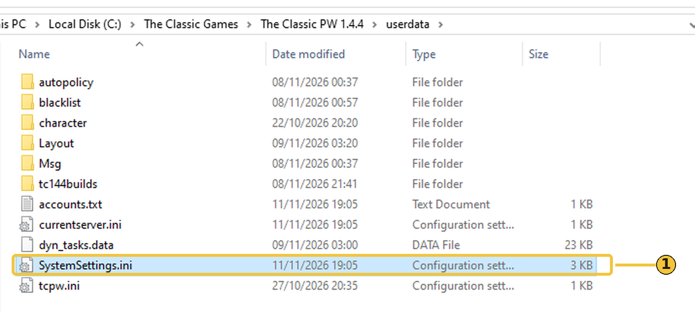
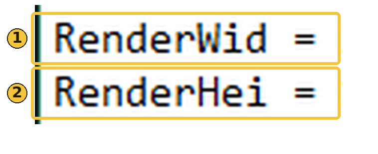
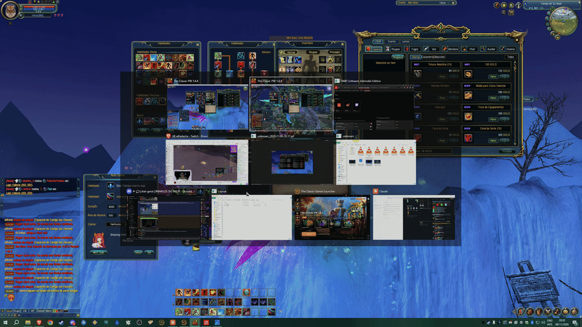

Perfect World · Guia
Mude a resolução do jogo pelo arquivo de configuração.
Antes: feche o jogo e faça uma cópia do SystemSettings.ini como backup.
Na pasta userdata, abra o SystemSettings.ini no Bloco de Notas.

Digite a largura em RenderWid e a altura em RenderHei. Salve.

Exemplo: RenderWid = 1920 e RenderHei = 1080.
Usei RenderWid = 2560 e RenderHei = 2400. O jogo ocupa a área de trabalho toda e deixa só a barra de tarefas livre.
